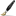

Intro
Heya! My name is Stormy. This is my website where you can get to know a little bit about me. To start, I'm a high schooler living the pacific northwest of the US, I love talking and getting along with people, and I love doing many things within the creative arts.
I am also a developer at Rotur, an ecosystem for communicating with others.
Interests/Hobbies
I love doing many things in my free time including:
- Programming
- Drawing
- Making music
- Socializing
- Making GTK themes (or really anything CSS)
Goals
Here are some goals I have for in the near and far future:
- Creating a GUI Toolkit
- Learning how to play flute (Working on)
- Improving my drawing skills
- Imrpving my music composition skills
- Go to college
Graphic Design Experience
I have been doing graphic design for around two years now. Personally, I would say I'm proficient at it but still have a lot to learn. Little weird to think about just a couple years ago I could barely center an element in CSS.
Here's a list of tooling I use/know:
- Figma (Proficient)

CSS (Proficient)- SASS (Beginner)
Design Projects
Reactium
A skueomorphic theme for Linux inspired by Aero, Fusion, and Oxygen.
Breezepod
A theme for the iPod that's meant to match KDE's Breeze HIG.
Arashi (Archived)
A smooth, modern icon set for Linux
Programming Experience
I have been programming for four years now. I have learned quite a bit in that time, here is a list of some programming languages I know, the experience metrics aren't super in-depth but should a basic idea of my skills:
- Python (Proficient)
- Javascript (Proficient)
- HTML (Does this even count lmao)
- Nim (Beginner)
Programming Projects
roturDocs
A powerful open source and free gitbook alternative.
QRoturMail
A work in progress QT client for roturMail.
pyRockbox
Python API for creating Rockbox themes.
Composigen
Makes photos feel nostalgic with ease!
Conclusion
While this website is still under construction, I hope anyone visiting the website has enjoyed learning a bit about me!
88x31 Buttons